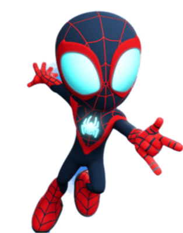
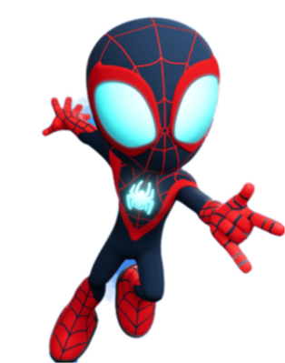
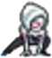
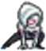

Conoce a Spidey y sus sorprendentes amigos
Spidey, nuestro lanzador de telarañas favorito se une a Ghost-Spider (Gwen Stacey) y Miles Morales para formar el equipo de Spidey, con la ayuda del cómico pero leal robot de Spidey, TRACE-E. Si Spidey se encuentra en una situación difícil donde necesita aún más poder de superhéroe, tengan la seguridad de que un amigo de los Vengadores correrá para ayudar.

Peter Parker, un joven huérfano neoyorquino que adquiere superpoderes después de ser mordido por una araña radiactiva, y cuya ideología como héroe se ve reflejada primordialmente en la expresión ”un gran poder conlleva una gran responsabilidad”.
Tras la muerte de Peter Parker, es quien toma la identidad de Spider-Man. La elección del presidente Barack Obama en enero de 2009, fue una fuente de inspiración para el cambio de etnicidad de Spider-Man.

El personaje es una variante de El Hombre Araña, una versión de universo alternativo de Gwen Stacy. Ella reside en la "Tierra-65", donde, en lugar de Peter Benjamin Parker, Gwen Stacy fue mordida por la Araña Radiactiva


Los vengadores acompañando tu aventura


Mas amigos, mas diversión!


Mas de 100 misiones para que juegues sin parar!
Tus padres, contentos. Explora el emocionante mundo de Spider-Man con más de 100 misiones que te mantendrán en constante acción y adrenalina. Enfréntate a desafíos únicos, desentraña misterios, y ayuda a Spider-Man a mantener la paz en la ciudad mientras te sumerges en la piel del héroe arácnido. ¿Tienes lo que se necesita para superar todas las misiones y convertirte en el auténtico Spider-Man?
Escenas deslumbrantes que te sorprenderán
Sumérgete en un universo de maravillas visuales con 'Spider-Man: [nombre del juego]'. Nuestro juego te llevará a través de escenas deslumbrantes que te dejarán sin aliento. Desde los rascacielos de Nueva York hasta los intrincados detalles de la vida de Peter Parker, cada rincón de este mundo te sorprenderá. Prepárate para una experiencia única que desafiará tus expectativas y te transportará a un asombroso viaje con el Hombre Araña.
Cada misión te dará puntos que no sirven para nada!
Cada misión es una oportunidad para vivir la emocionante vida del Hombre Araña, y aunque los puntos que ganarás no tengan un propósito específico, la verdadera recompensa está en la diversión y la inmersión que experimentarás en cada desafío. No necesitas acumular puntos para sentirte como un auténtico superhéroe, ya que la adrenalina de salvar la ciudad y la emoción de las acrobacias en el aire son más que suficientes. ¡Así que prepárate para sumergirte en la acción y la aventura, sin preocuparte por los puntos, y vive la experiencia definitiva de Spider-Man!
Derrota a los villanos y diviértete
la diversión está asegurada mientras te enfrentas a los infames villanos de la ciudad de Nueva York. Enfréntate a desafíos épicos, combate a tus enemigos más temibles y disfruta de una experiencia llena de acción y emoción. Cada encuentro con los villanos te sumergirá en una batalla trepidante y te llevará más cerca de convertirte en el auténtico Hombre Araña. Así que, ¿estás listo para derrotar a los villanos y sumergirte en la aventura definitiva de Spider-Man?"
”un gran poder conlleva una gran responsabilidad”

 

Miles Morales
Sus poderes son en gran medida similares a los de Peter Parker, el Spider-Man original, pero Miles tiene algunas diferencias notables. Los poderes de Miles Morales incluyen:
- 1. Agilidad sobrehumana: Miles posee una agilidad extraordinaria que le permite moverse de manera rápida y realizar acrobacias impresionantes, al igual que Peter Parker.
- 2. Sentido arácnido: Al igual que Peter Parker, Miles Morales tiene un sentido arácnido que le permite detectar el peligro antes de que ocurra. Esto le proporciona una ventaja en la lucha contra los criminales.
- 3. Trepar paredes: Miles puede adherirse a las paredes y techos, lo que le permite moverse de manera vertical y colgarse boca abajo, al igual que otros Spider-Men.
- 4. Camuflaje arácnido: Una de las características distintivas de Miles Morales es su habilidad de camuflaje arácnido. Puede volverse completamente invisible para el ojo humano durante un corto período de tiempo. Esta habilidad le proporciona una ventaja estratégica en situaciones de combate y sigilo.
- 5. Descarga venenosa: En algunas versiones de los cómics y adaptaciones, Miles Morales también puede liberar una "descarga venenosa" que es una forma de energía bioeléctrica. Esta habilidad puede usarse en combate o para desactivar dispositivos electrónicos.
Estos son los poderes principales de Miles Morales en los cómics y en las adaptaciones cinematográficas y de videojuegos. El personaje de Miles Morales ha ganado popularidad y es conocido por su origen diverso y sus habilidades únicas en el universo de Spider-Man.
Gwen Stacy
también conocida como Spider-Woman o Spider-Gwen, es un personaje de cómic de Marvel Comics que proviene de una realidad alternativa en el multiverso de Spider-Man. Sus poderes son en gran medida similares a los de otros Spider-Personajes, pero Gwen tiene algunas variaciones específicas. Los poderes de Spider-Gwen incluyen:
- Agilidad sobrehumana: Gwen Stacy posee una agilidad extraordinaria que le permite moverse de manera rápida y realizar acrobacias impresionantes.
- 2. Fuerza sobrehumana: Al igual que otros Spider-Personajes, Gwen tiene una fuerza considerable que le permite levantar objetos pesados y luchar contra enemigos formidables.
- 3. Sentido arácnido: Spider-Gwen también posee el sentido arácnido, que le permite detectar el peligro antes de que ocurra, similar a Peter Parker y otros Spider-Men.
- 4. Trepar paredes: Al igual que otros Spider-Personajes, Gwen Stacy puede adherirse a las paredes y techos, lo que le permite moverse de manera vertical y colgarse boca abajo.
- 5. Disparadores de telaraña: Spider-Gwen utiliza lanzadores de telarañas para balancearse entre edificios, atrapar a los villanos y crear redes para inmovilizar a los oponentes.
En resumen, Spider-Gwen posee habilidades arácnidas similares a las de otros personajes de Spider-Man, pero su traje y su identidad están diseñados de manera diferente, y proviene de una realidad alternativa donde Gwen Stacy adquiere los poderes de Spider-Man en lugar de Peter Parker. El personaje ha ganado popularidad en los cómics y se ha convertido en un ícono por derecho propio.
Peter Parker
también conocido como Spider-Man, es un personaje de ficción de Marvel Comics. Los poderes de Spider-Man son el resultado de una picadura de araña radiactiva que le otorgó habilidades especiales. Sus poderes incluyen:
- 1. Agilidad sobrehumana: Spider-Man tiene una agilidad extraordinaria que le permite moverse de manera rápida y ágil, saltar grandes distancias y realizar acrobacias asombrosas.
- 2. Fuerza sobrehumana: Aunque no es tan fuerte como algunos de los superhéroes más poderosos de Marvel, Spider-Man tiene una fuerza considerable que le permite levantar objetos pesados y enfrentarse a enemigos formidables. saltar grandes distancias y realizar acrobacias asombrosas.
- 3. Sentido arácnido: Spider-Man tiene un sentido arácnido que le permite detectar el peligro antes de que ocurra. Puede reaccionar instintivamente a las amenazas, lo que lo hace extremadamente difícil de sorprender.
- 4. Trepar paredes: Spider-Man puede adherirse a las paredes y techos, lo que le permite moverse de manera vertical y colgarse boca abajo.
- 5. Disparadores de telaraña: Peter Parker ha creado lanzadores de telarañas especiales que le permiten disparar y controlar telarañas. Utiliza estas telarañas para balancearse entre edificios, atrapar a los villanos y crear redes para inmovilizar a los oponentes.
Estos son los poderes principales de Spider-Man en los cómics y en varias adaptaciones cinematográficas y televisivas. Cabe destacar que a lo largo de la historia de los cómics, Spider-Man ha adquirido o perdido temporalmente otros poderes y habilidades debido a diferentes tramas y eventos.
Lo último de SPIDEY Y SUS AMIGOS en tu buzón de correo electrónico
Al inscribirse en nuestra lista de correo, nos autoriza a ponernos en contacto con usted para enviarle ofertas y actualizaciones de marketing por correo electrónico, y también acepta nuestra Política de privacidad y las Condiciones del servicio.


 
